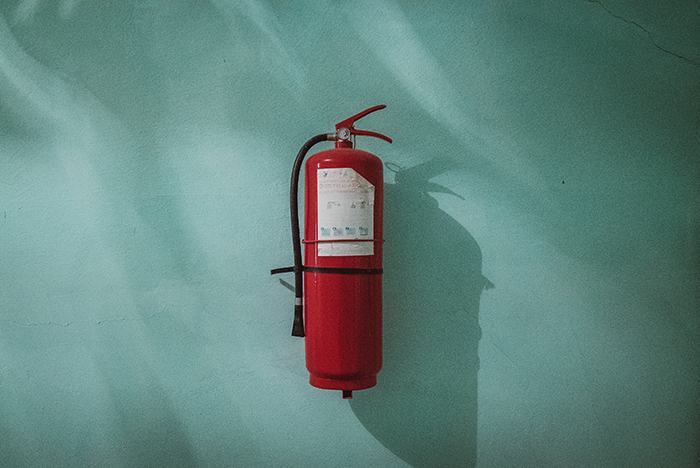

Brandkadet
Rekrutering af ildfluer
Brandkadet giver to gange årligt 8 unge beboere i Vejleåparken mulighed for at deltage i et 5 dages forløb på en brandstation. Her lærer de unge nyttige redskaber som teambuilding, førstehjælp, idrætstest og får mulighed for at prøve kræfter med brandslukning, røgdykning og rapelling. Forløbet afsluttes med en opvisning og overrækkelse af diplomer.
12 ugers opfølgningsforløb
De to ét-ugers forløb følges op af et 12 ugers forløb for de deltagere, som er motiverede og egnede til at fortsætte. Det er i samarbejde med Østsjællands Beredskab og Ishøj Kommunes Stabsenhed for Tryghed og Kriminalitetsforebyggelse, at de særligt motiverede rekrutteres.
Forløbet på 12 uger har plads til 8 deltagere per gang, og der lægges op til, at deltagerne vil være unge fra henholdsvis Helhedsplanen i Vejleåparken og Helhedsplanerne i Taastrupgård og Gadehavegård. Der vil være 2-3 deltagere fra hvert boligområde på hvert forløb. Desuden vil der på 12 ugers-forløbet, være en tidligere ildflue eller brandkadet, som deltager som hjælpeinstruktør. Dette gøres ud fra gode erfaringer fra et pilotprojekt foretaget i den nuværende helhedsplan i Vejleåparken, hvor en tidligere brandkadetdeltager var i erhvervspraktik samtidig med, at næste hold ildfluer havde deres forløb.